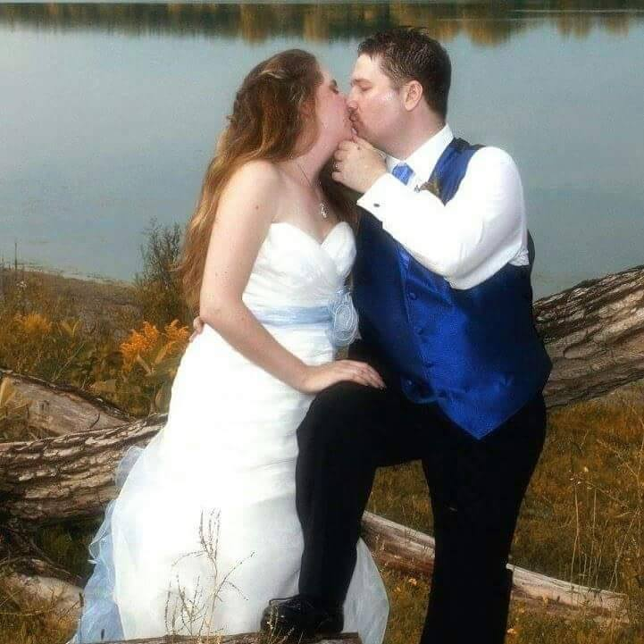

My name is Shannon, I'm 26 years old, a wife, mother of four furbabies (3 cats and a dog)Kira, Jacy, Merlin and Lalit;, a video gamer, movie and book addict.
I'm also a writer who's aspiring to become published, I have many manuscripts in progress, only one is complete, just waiting to be edited before I can send it off.
Writing to me is as necessary as breathing, if I go too long without writing something not school related, I hit a really low point mentally and have a hard time
functioning like a regular human being. Which means, I don't sleep, I lose focus and can't concentrate on important things (like school work etc), and overall
really hard to be around. It's a way to keep my emotions under control, I guess is the best way to put it.
The photo above is me and my dad when I was extremely young, I couldn't have been more than 3 when this was taken
I married my best friend Dominic on September 4th, 2015. He's put up with me changing programs a few times, this is my 4th program and 3rd college in about 7 nearly 8 years.
I'm looking forward to sticking with this one and getting a good career out of it.